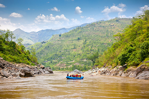

Founded in 2015, Whitewater Family Rafting began with a passion for sharing the joy of the river. From humble beginnings, we’ve grown into a trusted rafting company known for safe, fun, and family-friendly adventures.
Our mission remains the same—creating unforgettable memories on every ride. Over the years, thousands of families and adventurers have joined us to experience the thrill and serenity of whitewater rafting.